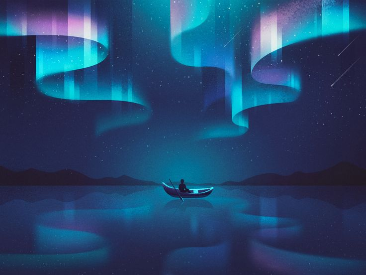
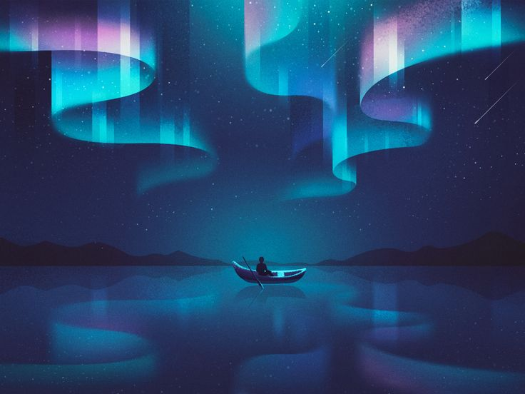
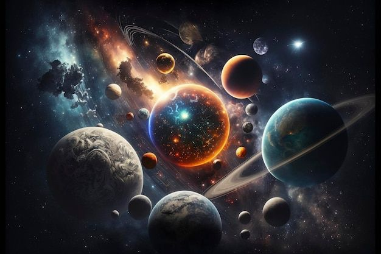
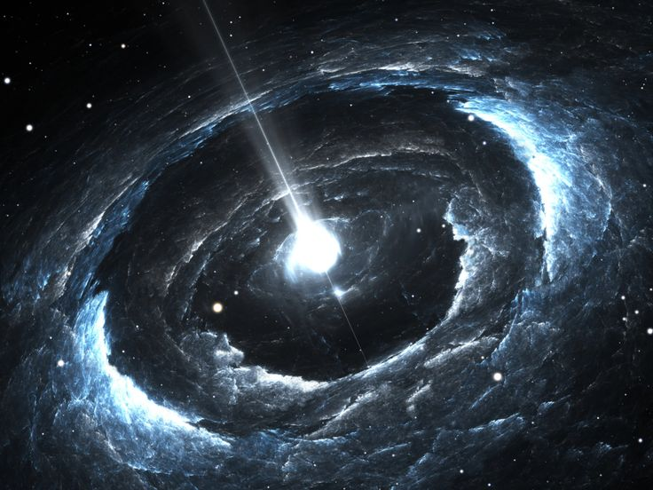
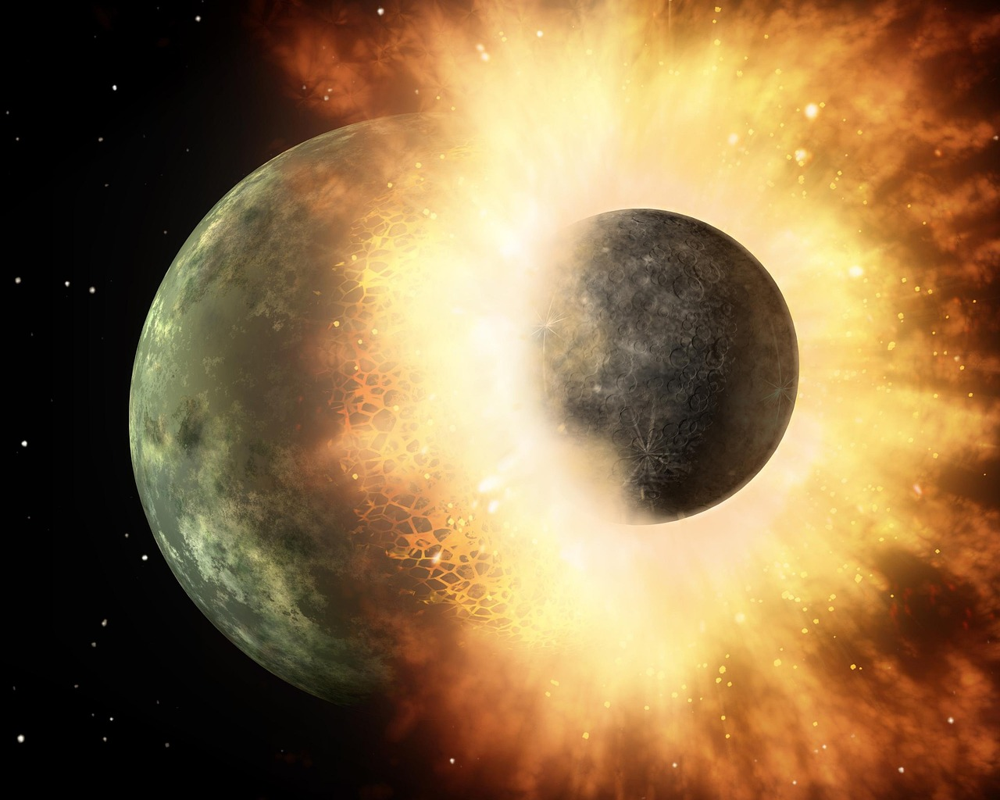
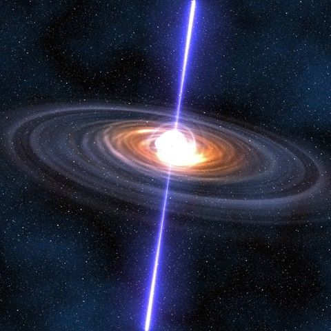
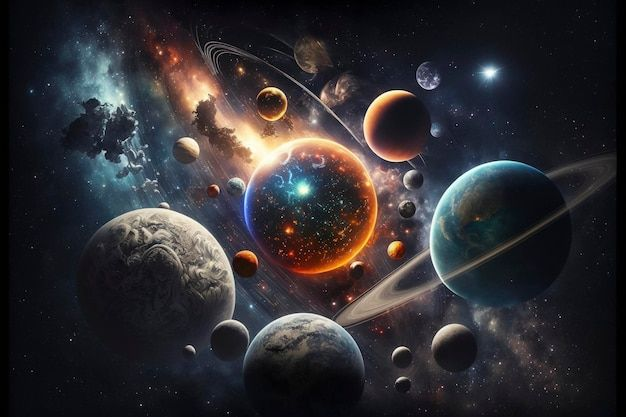
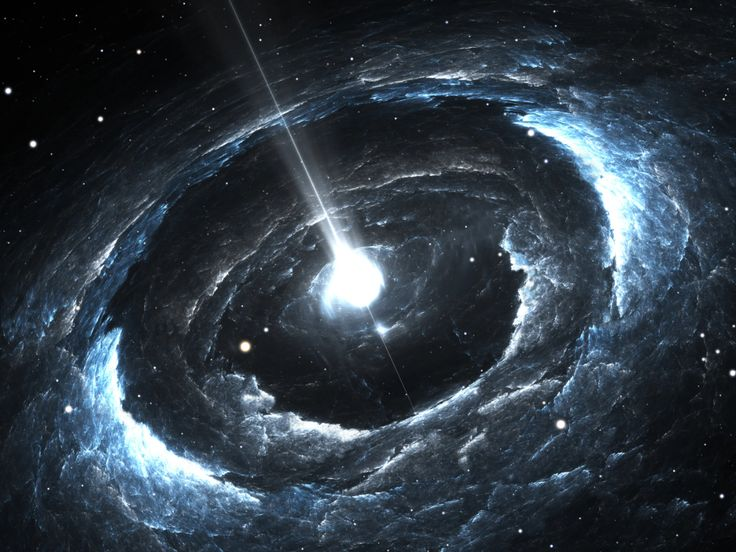
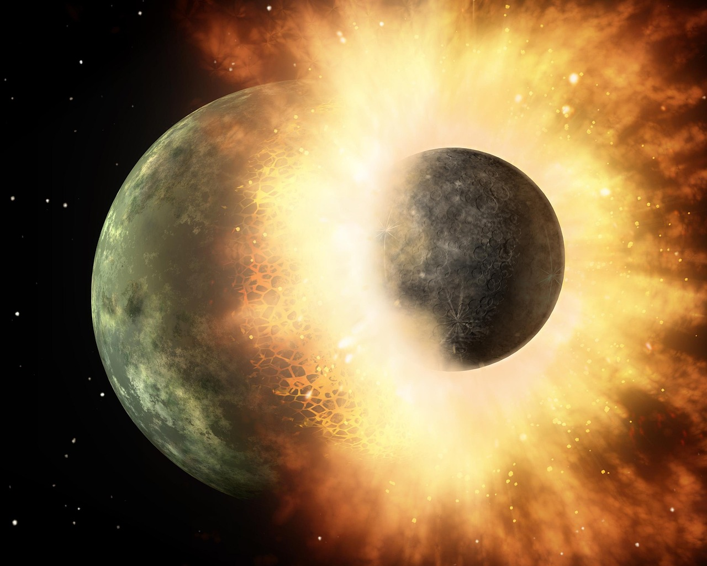
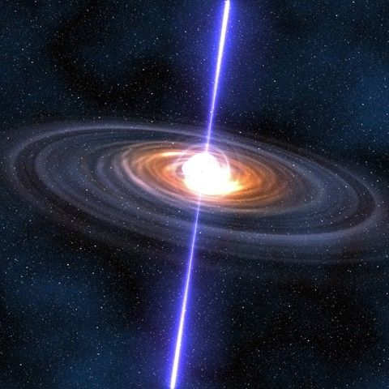

Fenomena Luar Angkasa
 


 







1. Hujan Meteor
Hujan meteor terjadi ketika Bumi melewati jejak partikel yang ditinggalkan oleh komet atau asteroid. Ketika partikel-partikel ini memasuki atmosfer Bumi, mereka terbakar dan menciptakan garis-garis cahaya yang kita kenal sebagai meteor. Beberapa hujan meteor yang terkenal adalah Perseid, yang terjadi setiap bulan Agustus, dan Geminid, yang terjadi setiap bulan Desember.
2. Supernova
Supernova adalah ledakan dahsyat yang terjadi pada akhir siklus hidup sebuah bintang besar. Ledakan ini melepaskan energi yang sangat besar dan dapat bersinar lebih terang dari seluruh galaksi untuk sementara waktu. Supernova memainkan peran penting dalam penciptaan elemen berat di alam semesta dan dapat membentuk nebula yang indah seperti Nebula Kepiting.
3. Black Hole (Lubang Hitam)
Lubang hitam adalah objek yang terbentuk ketika sebuah bintang masif runtuh ke dalam dirinya sendiri di akhir siklus hidupnya, menciptakan area di ruang angkasa dengan gravitasi yang sangat kuat sehingga bahkan cahaya tidak bisa lolos. Black hole sering dikelilingi oleh piringan akresi yang bersinar karena materi yang jatuh ke dalamnya.
4. Aurora
Aurora, juga dikenal sebagai cahaya utara (Aurora Borealis) di belahan bumi utara dan cahaya selatan (Aurora Australis) di belahan bumi selatan, adalah fenomena cahaya alami yang menakjubkan yang terjadi ketika partikel bermuatan dari angin matahari berinteraksi dengan medan magnet Bumi. Partikel ini terperangkap di atmosfer bagian atas dan menyebabkan pancaran cahaya berwarna-warni.
5. Badai Matahari
Badai matahari terjadi ketika ada letusan besar energi di permukaan Matahari, yang mengirim partikel bermuatan dan radiasi ke luar angkasa. Badai matahari dapat mempengaruhi komunikasi radio, sistem navigasi, dan bahkan mengganggu jaringan listrik di Bumi.
6. Galaksi Spiral
Galaksi spiral, seperti galaksi kita, Bima Sakti, memiliki struktur yang indah dengan lengan spiral yang berputar keluar dari pusat galaksi. Lengan-lengan ini penuh dengan bintang muda, gas, dan debu, serta sering menjadi tempat kelahiran bintang baru.
7. Eksoplanet
Eksoplanet adalah planet yang mengorbit bintang di luar sistem tata surya kita. Penemuan eksoplanet pertama kali terjadi pada tahun 1992, dan sejak itu, ribuan eksoplanet telah ditemukan. Beberapa eksoplanet berada di zona laik huni bintang mereka, di mana kondisi bisa mendukung kehidupan.
8. Pulsar
Pulsar adalah jenis bintang neutron yang berputar sangat cepat dan memancarkan sinar radio yang sangat kuat. Sinar ini terlihat dari Bumi sebagai denyut radio reguler, mirip dengan mercusuar. Pulsar pertama kali ditemukan pada tahun 1967 oleh Jocelyn Bell Burnell.
9. Tabrakan Galaksi
Ketika dua galaksi bertabrakan, mereka bisa membentuk galaksi baru yang lebih besar. Proses ini sering menghasilkan daerah pembentukan bintang yang intens dan bisa menciptakan struktur galaksi yang unik. Misalnya, Galaksi Antena adalah hasil dari tabrakan dua galaksi spiral.
10. Quasar
Quasar adalah inti galaksi yang sangat terang dengan lubang hitam supermasif di pusatnya. Quasar adalah beberapa objek paling terang di alam semesta dan dapat melepaskan energi ratusan kali lipat dari seluruh galaksi. Quasar ditemukan pada 1960-an dan masih menjadi subjek penelitian intensif.